ZCO Document Management
- Für
- Zachodniopomorskie Centrum Onkologii w Szczecinie
- Erstellt von
- Polmedi Group sp. z o.o., Poznań
- Anwendungsversion
- 1.6.0
- Ausgabedatum
- 25. August 2026
Inhalt
- Was ZCO Document Management ist
- Anmeldung und Bildschirmaufbau
- Übersicht
- Ihr Konto und das Handbuch
- Dokumente durchsehen
- Dokumente hinzufügen
- Ordnung halten: Ordner, Verschieben, Löschen
- Berechtigungen und Rollen
- KI-Chat — Fragen nach dem Inhalt der Dokumente
- Suche über die beschreibenden Felder
- Verwaltung
- Wie die Anwendung Dokumente erkennt
- Anfrage an den technischen Support
- Bewährte Vorgehensweisen
- Einschränkungen und Entwicklungspläne
- Häufige Fragen
- Glossar
Was ZCO Document Management ist
ZCO Document Management (kurz ZCO DM) ist eine interne Dokumentendatenbank. Die Anwendung tut zweierlei zugleich: Sie bewahrt Dokumente in einer geordneten Ordnerstruktur auf und erlaubt es, Fragen zu ihrem Inhalt in gewöhnlicher Sprache zu stellen — so, wie man einen Kollegen fragen würde, der diese Dokumente kennt.
Der Unterschied zu einem gewöhnlichen Netzlaufwerk ist grundsätzlich. Auf einem Laufwerk muss man wissen, in welcher Datei man suchen soll. Hier genügt die Frage „Wie sind die Regeln zur Telearbeit?“, und die Anwendung findet die passenden Stellen selbst, setzt daraus eine Antwort zusammen und zeigt, aus welchem Dokument jeder Satz stammt.
Zwei Wege zum Dokument
Die Anwendung beantwortet zwei verschiedene Arten von Fragen und hat dafür zwei getrennte Bildschirme. Der KI-Chat beantwortet Fragen nach dem Inhalt — „Ab welchem Alter des Kindes steht der Zuschuss zu?“. Die Suche beantwortet Fragen nach der Struktur — „Zeige alle Verordnungen aus dem Jahr 2023“. Die Trennung ist gewollt: Dank ihr muss man nicht raten, in welches Feld die Frage gehört.
Was mit einem Dokument nach dem Hochladen geschieht
Jedes Dokument durchläuft eine automatische Verarbeitung. Die Anwendung liest seinen Inhalt (auch aus Tabellen), teilt ihn in Abschnitte, erkennt die Art des Dokuments — Verordnung, Verfahren, Antrag — und zieht beschreibende Felder daraus, etwa eine Nummer, ein Datum oder die genehmigende Person. Erst danach wird das Dokument für die Suche und für den Chat sichtbar.
Die Verarbeitung eines Dokuments dauert gewöhnlich zwischen einigen zehn Sekunden und einigen Minuten — je nach seiner Länge und danach, ob es sich um eine Textdatei oder um einen Scan handelt, der eine Schrifterkennung braucht. In dieser Zeit hat das Dokument den Status In der Warteschlange oder Verarbeitung.
Datensicherheit
Die gesamte Anwendung samt Sprachmodell läuft auf einem Server, der Zachodniopomorskie Centrum Onkologii gehört. Weder der Inhalt der Dokumente noch die gestellten Fragen verlassen diesen Server, und nichts wird an einen externen Dienst geschickt. Der Zugriff auf Dokumente ergibt sich aus den Berechtigungen der Rolle, zu der ein Konto gehört — ein Benutzer sieht nur die Ordner, die ihm freigegeben wurden.
Anmeldung und Bildschirmaufbau
Die Anwendung öffnen Sie im Webbrowser unter der Adresse, die Ihr Administrator angegeben hat. Über dem Formular steht das Instanzzeichen — ein Symbol und ein Name. Sie melden sich mit Ihrer E-Mail-Adresse und dem vom Administrator erhaltenen Passwort an; die Groß- und Kleinschreibung der Adresse spielt keine Rolle.
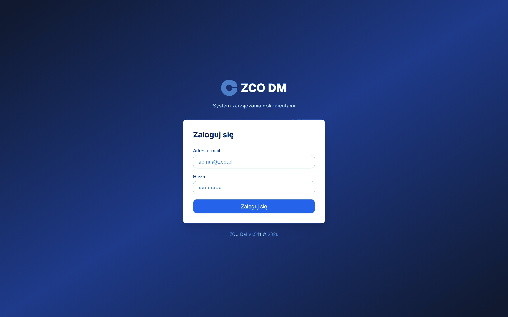
Nach der Anmeldung teilt sich der Bildschirm in zwei Teile. Links steht das dunkelblaue Menü, rechts der Inhalt der gewählten Seite. In der rechten oberen Ecke sind Vor- und Nachname sowie ein Kreis mit den Initialen zu sehen, der das Benutzermenü aufklappt. Unten im Seitenmenü steht die Versionsnummer der Anwendung — sie ist ein Link zur Änderungshistorie — sowie die Angabe zum Hersteller.
Menü einklappen
Ein Klick auf das Instanzzeichen oben im Menü klappt es auf die bloßen Symbole ein und lässt mehr Platz für den Inhalt. Ein weiterer Klick klappt das Menü wieder auf. Die Wahl wird über Sitzungen hinweg gemerkt, ein einmal eingeklapptes Menü bleibt also auch nach der nächsten Anmeldung eingeklappt.
Das Menü unter den Initialen
- Profil — die eigenen Kontodaten und die Passwortänderung.
- Handbuch — dieses Dokument, unmittelbar in der Anwendung geöffnet; es lässt sich auch als PDF herunterladen.
- Abmelden — Arbeitsende.
Einträge des Seitenmenüs
- Übersicht — der Startbildschirm mit einer Zusammenfassung in Zahlen und Aktivitätsdiagrammen.
- Dateien — der Explorer für Ordner und Dokumente.
- KI-Chat — Fragen nach dem Inhalt der Dokumente.
- Suche — die Suche über die beschreibenden Felder.
Darunter befindet sich eine Linie mit der Beschriftung VERWALTUNG und darunter ein Bereich, der nur für Administratoren sichtbar ist: Benutzer, Zugriffsliste, Dokumentschemata, Dateiwarteschlange, Antwortprotokoll und Einstellungen. Dieselben Einträge erscheinen zusätzlich als Registerleiste am oberen Rand jedes Verwaltungsbildschirms.
Unten im Menü steht noch die Kachel Brauchen Sie Hilfe? mit der Schaltfläche Kontakt aufnehmen — sie führt zum Formular für eine Anfrage an den technischen Support (siehe das eigene Kapitel). Passt das Menü auf einem niedrigen Bildschirm nicht, scrollt nur die Liste der Einträge; die Hilfe-Kachel und die Fußzeile bleiben an ihrem Platz.
Übersicht
Die Übersicht ist der Startbildschirm. Sie zeigt den Zustand der Dokumentendatenbank in Zahlen und Diagrammen, und alles darauf bezieht sich auf den gewählten Zeitraum — die Auswahlliste in der rechten oberen Ecke mit den Optionen 7, 30 und 90 Tage. Eine Wahl gilt für den ganzen Bildschirm, Kacheln und Diagramme sprechen also stets über denselben Zeitraum.
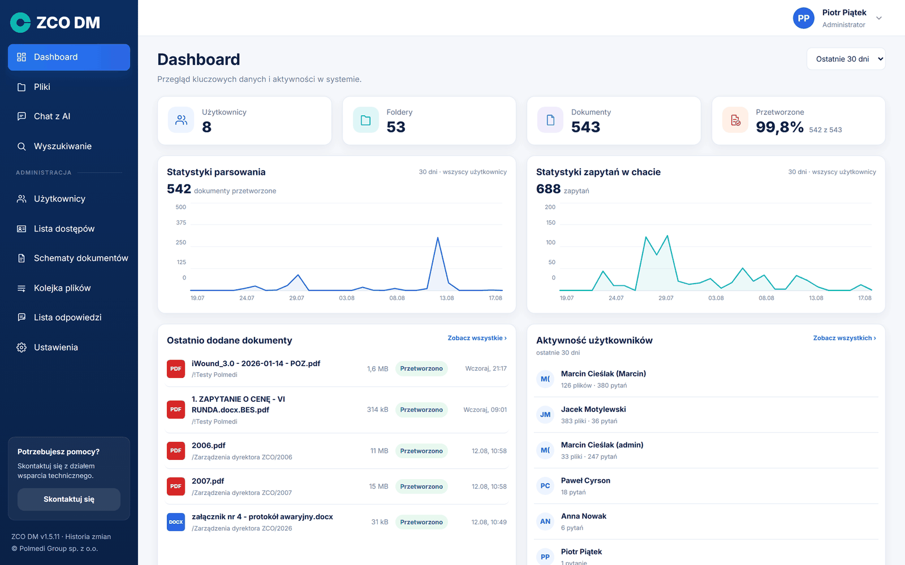
Die Kacheln oben
Vier Kacheln nennen die Zahl der Konten, Ordner und Dokumente sowie den Anteil der verarbeiteten Dokumente. Unter der Zahl steht mitunter eine zweite Zeile mit dem Vergleich zum vorigen Zeitraum, etwa ↑ 12,6 % gegenüber den vorigen 30 Tagen.
Diagramme
Zwei Diagramme zeigen die tägliche Aktivität: die Zahl der verarbeiteten Dokumente und die Zahl der an den Chat gestellten Fragen. Ein Zeiger über der Kurve zeigt den genauen Wert des jeweiligen Tages.
Zuletzt hinzugefügte Dokumente und Benutzeraktivität
Die beiden Felder unter den Diagrammen zeigen die fünf zuletzt hochgeladenen Dokumente sowie eine Übersicht der Kontoaktivität im gewählten Zeitraum — wie viele Dateien jemand hochgeladen und wie viele Fragen er gestellt hat. Konten ganz ohne Aktivität verstopfen die Liste nicht; ihre Zahl steht darunter.
Schnellaktionen, Speicherplatz und Serverzustand
Die untere Reihe besteht aus drei Feldern. Schnellaktionen führen unmittelbar zu den häufigsten Tätigkeiten. Speicherplatz im System zeigt die Belegung der Serverfestplatte — Achtung: der ganzen Festplatte, die mit den übrigen Diensten geteilt wird, weshalb darunter die Größe der Dokumente allein gesondert angegeben ist. Systemstatus sagt, ob Anwendung, Datenbank, Dokumentenparser und Dateispeicher laufen.
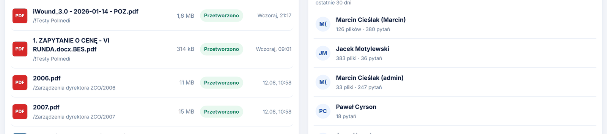
Ihr Konto und das Handbuch
Der Kreis mit den Initialen in der rechten oberen Ecke klappt ein Menü mit drei Einträgen auf: Profil, Handbuch und Abmelden. Das Menü schließt sich mit der Escape-Taste oder mit einem Klick daneben.

Die Seite Profil
Die Seite Profil zeigt die Kontodaten: Anzeigename, Vor- und Nachname, E-Mail-Adresse, zugewiesene Rolle, Kontostatus und das Datum der letzten Anmeldung.
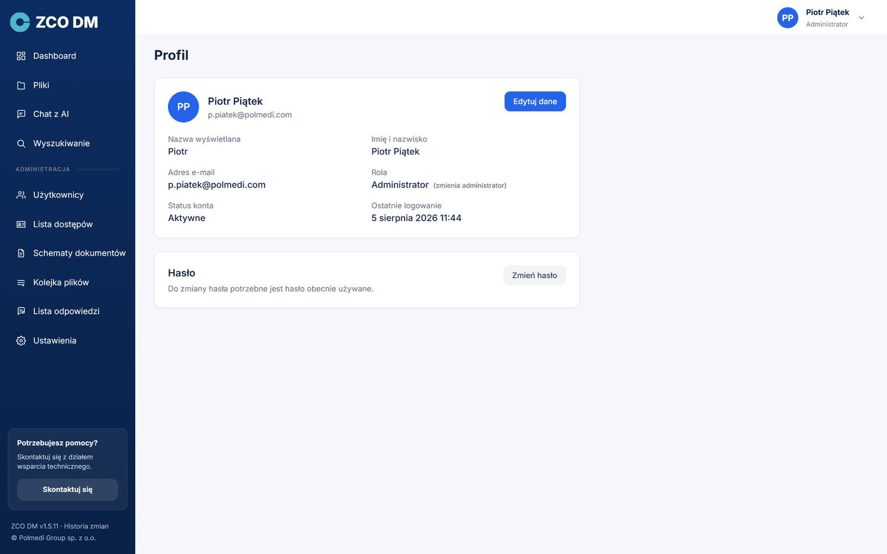
Die Schaltfläche Daten bearbeiten verwandelt die ersten drei Einträge in Formularfelder. Gespeichert wird mit Speichern, zurückgezogen mit Abbrechen.
- Anzeigename — erscheint in der Begrüßung, in den Initialen und in den Übersichten des Administrators. Er dient nicht zur Anmeldung, Sie können ihn also beliebig ändern.
- Vorname und Nachname — die vollständige Form, verwendet auf der Seite Profil und im Menü.
- E-Mail-Adresse — mit dieser Adresse melden wir uns in der Anwendung an. Nach ihrer Änderung erfolgt die nächste Anmeldung bereits mit der neuen Adresse.
Passwort ändern
Das Passwort ändern wir auf der eigenen Karte Passwort mit der Schaltfläche Passwort ändern. Das Formular fragt nach dem derzeit verwendeten Passwort und nach der zweimaligen Eingabe des neuen. Das neue Passwort muss mindestens acht Zeichen lang sein und sich vom bisherigen unterscheiden.
Nach einer erfolgreichen Änderung meldet die Anwendung ab und zeigt den Anmeldebildschirm — das ist Absicht: So prüfen wir gleich, dass das neue Passwort funktioniert.
Hilfe
Der Eintrag Handbuch öffnet die Seite Hilfe mit diesem Dokument unmittelbar in der Anwendung, ohne dass eine Datei auf der Festplatte gesucht werden müsste. Oben auf der Seite stehen zwei Schaltflächen: In neuem Tab öffnen und PDF herunterladen. Der Administrator sieht die vollständige Ausgabe, die übrigen Konten die Benutzerausgabe, die nur die Bildschirme beschreibt, auf die sie Zugriff haben.
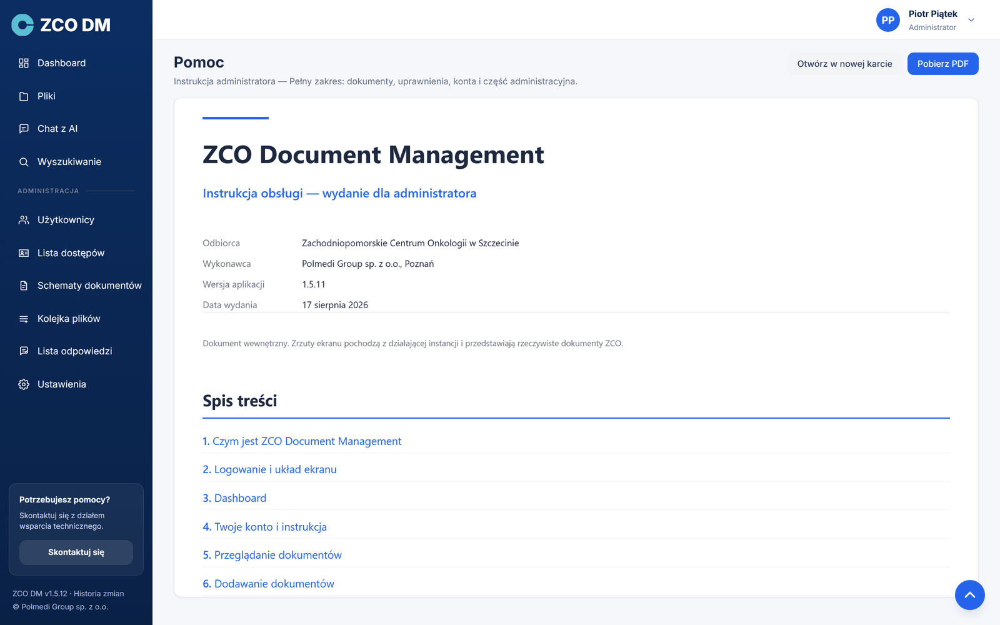
Dokumente durchsehen
Der Bildschirm Dateien ist der Dokumentenexplorer. Oben steht der Navigationspfad, der beim Stammordner beginnt — ein Klick auf ein beliebiges seiner Elemente führt auf jene Ebene zurück. Darunter gibt es zwei Karten: Ordner und Dateien.
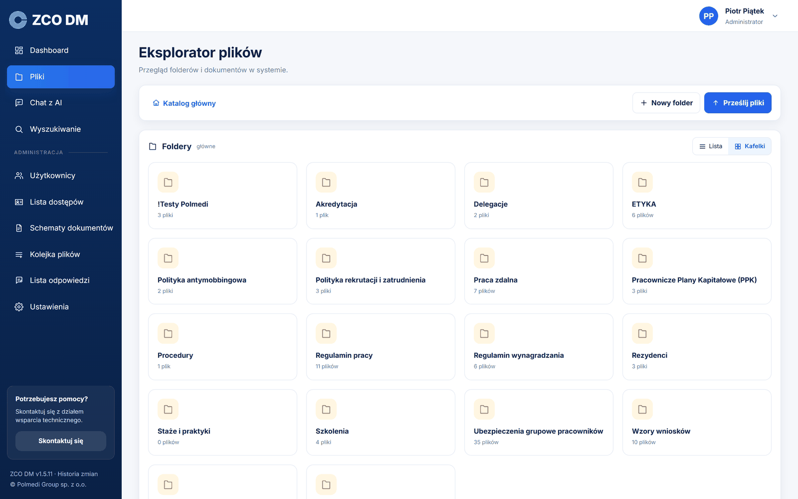
Zwei Ansichten
Sowohl Ordner als auch Dateien lassen sich als Liste oder als Kacheln betrachten — der Umschalter sitzt in der Kopfzeile jeder Karte, und die Wahl gilt für Ordner und für Dateien getrennt. Die Liste fasst mehr Angaben auf einen Blick, Kacheln sind bequemer, wenn wir ein Dokument „aus dem Bildgedächtnis“ suchen.

Spalten der Liste
Die Dateiliste zeigt den Dateityp, den Namen, die Größe, die von der Anwendung erkannte Kategorie und das Datum des Hinzufügens. Die Kategorie ist die Art des Dokuments — Verordnung, Verfahren, Antrag — und meist ist sie es, die beim Auffinden der richtigen Datei hilft. Dokumente, die die Anwendung keiner Kategorie zugeordnet hat, tragen in dieser Spalte das Wort nicht erkannt.
Suchen und Blättern
Das Feld Datei suchen über der Liste filtert die Dokumente nach Namen innerhalb des aktuellen Ordners. Unter der Liste stehen die Zahl der Dokumente und die Wahl, wie viele Einträge pro Seite gezeigt werden (10, 25, 50 oder 100).
Einzelheiten zum Dokument
Ein Klick auf eine Zeile öffnet ein Fenster mit den Einzelheiten: Dateityp, Größe, Verarbeitungsstatus, Datum des Hinzufügens, Ordner, das Konto, das das Dokument hochgeladen hat, und die erkannte Kategorie. Aus diesem Fenster lässt sich das Dokument herunterladen, und PDF-Dateien lassen sich zudem in einem neuen Tab ansehen.
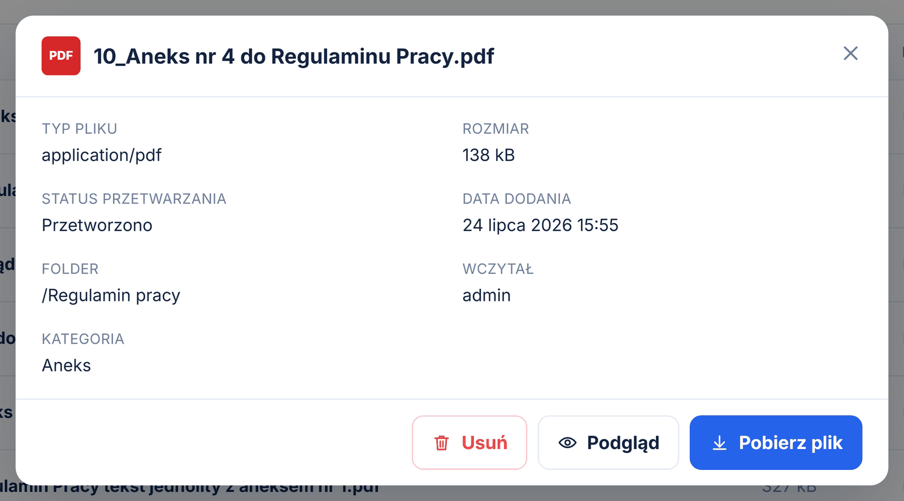
Dokumente hinzufügen
Dokumente fügen wir mit der Schaltfläche Dateien hochladen in der rechten oberen Ecke der Seite Dateien hinzu. Sie landen in dem Ordner, der gerade geöffnet ist — deshalb gehen wir zuerst in den richtigen Ordner und laden erst dann hoch. Der Zielordner ist im Hochladefenster immer ausgeschrieben.

Es lassen sich mehrere Dateien auf einmal auswählen. Die Anwendung zeigt dann den Fortschritt für jede von ihnen einzeln und am Ende eine Zusammenfassung: wie viele Dateien hochgeladen wurden und wie viele mit einem Fehler endeten.
Erlaubte Formate
Die Anwendung nimmt Dateien der Formate PDF, DOCX, ODT und XLSX an, jede bis zu einer Größe von 100 MB. Die Liste der Formate ist im Hochladefenster sichtbar und stammt unmittelbar aus den Anwendungseinstellungen — ändert der Administrator sie, zeigt das Fenster die neue Liste, und das Systemfenster zur Dateiauswahl filtert die übrigen Endungen heraus.
Ordnung halten: Ordner, Verschieben, Löschen
Die Sammlung der Dokumente in Ordnung zu halten ist Aufgabe des Administrators. Alle unten beschriebenen Tätigkeiten werden auf dem Bildschirm Dateien ausgeführt.
Neuer Ordner
Die Schaltfläche Neuer Ordner legt einen Unterordner an der Stelle an, an der wir uns gerade befinden. Das Fenster zeigt, welche Berechtigungen der neue Ordner vom übergeordneten Ordner erbt — das ist eine reine Anzeige; Berechtigungen werden später mit dem Vorhängeschloss-Symbol geändert.
Ordner umbenennen
Das Stift-Symbol auf der Kachel eines Ordners (sichtbar beim Überfahren) ändert seinen Namen. Die Änderung betrifft den Pfad dieses Ordners und all seiner Unterordner; Dateien und Berechtigungen bleiben unverändert zugewiesen.
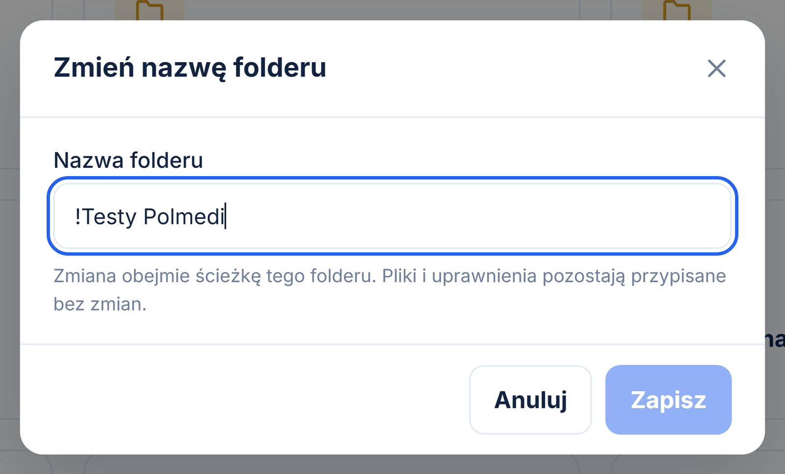
Dokumente verschieben
Ein einzelnes Dokument wird mit dem Ordner-mit-Pfeil-Symbol in seiner Zeile verschoben. Die Liste der Zielordner ist alphabetisch geordnet und enthält nur jene, in denen wir Schreibrecht haben.
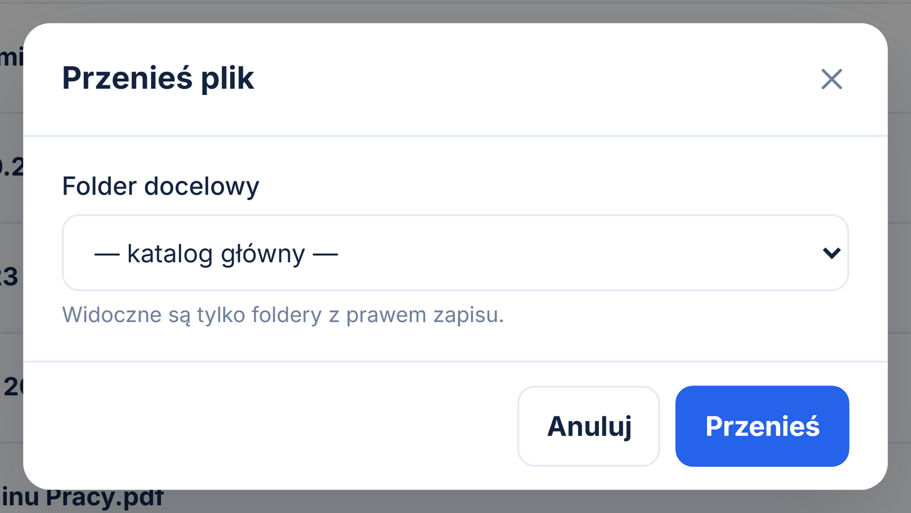
Aktionen auf mehreren Dokumenten zugleich
Werden Dokumente mit den Kästchen links ausgewählt, erscheint die Schaltfläche Aktion auf ausgewählte anwenden mit zwei Möglichkeiten: In einen anderen Ordner verschieben und Namen entsprechend Kategorie zuweisen (beschrieben im Kapitel über die Dokumentenerkennung). Das Kästchen in der Kopfzeile wählt die Dokumente der aktuellen Seite aus, nicht die ganze Liste.
Löschen
Das Papierkorb-Symbol löscht ein Dokument samt seinen Abschnitten in der Wissensbasis — nach dem Löschen taucht es in Chat-Antworten nicht mehr auf. Das Löschen eines Ordners verschiebt seine Dokumente in den Stammordner, mit dem Ordner geht also nichts verloren.
Berechtigungen und Rollen
Der Zugriff auf Dokumente ergibt sich aus der Rolle, zu der ein Konto gehört, und aus den Berechtigungen, die dieser Rolle auf Ordnern erteilt wurden. Berechtigungen werden nicht einzelnen Personen erteilt — dadurch genügt es bei einem Stellenwechsel, die Rolle des Kontos zu ändern, statt Dutzende Ordner zu korrigieren.
Zwei Zugriffsebenen
- Lesen — die Rolle sieht die Dokumente im Ordner, kann sie öffnen und herunterladen, und ihr Inhalt nimmt an Chat-Antworten teil.
- Schreiben — zusätzlich lassen sich neue Dokumente hochladen, verschieben und löschen.
Vererbung
Eine einem Ordner erteilte Berechtigung umfasst auch seine Unterordner. Im Berechtigungsfenster sind geerbte Einträge als (vom übergeordneten Ordner geerbt) beschrieben und lassen sich dort nicht entfernen — sie werden im übergeordneten Ordner geändert. Auf einem Unterordner lässt sich der Zugriff nur erweitern, etwa Lesen auf Schreiben anheben.
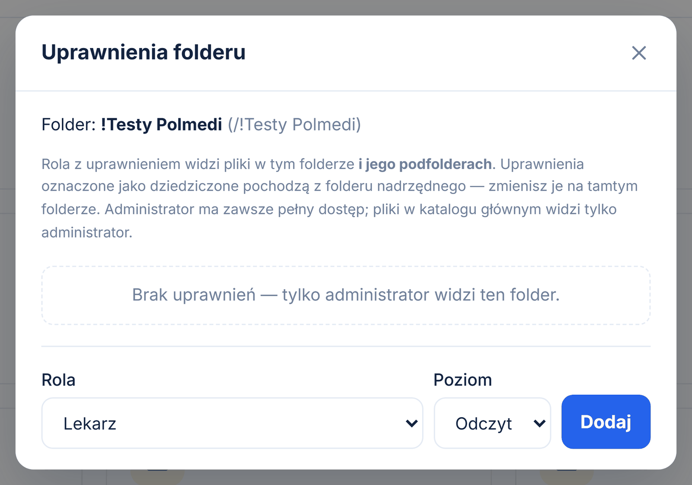
Rollen verwalten
Rollen werden auf dem Bildschirm Zugriffsliste mit der Schaltfläche Rolle hinzufügen angelegt. Eine Rolle lässt sich auch umbenennen und löschen. Drei Regeln, die die Anwendung durchsetzt, sollte man kennen:
- Das Umbenennen ändert nur die Bezeichnung. Der interne Rollencode bleibt derselbe, zuvor erteilte Berechtigungen und Kontozuordnungen wirken also unverändert weiter.
- Systemrollen lassen sich nicht löschen — Administrator und Gast sind Teil der Funktionsweise der Anwendung.
- Das Löschen einer Rolle, der Konten angehören, verlangt die Angabe einer Ersatzrolle. Die Anwendung verschiebt diese Konten dorthin, damit keines ohne Zuordnung bleibt.
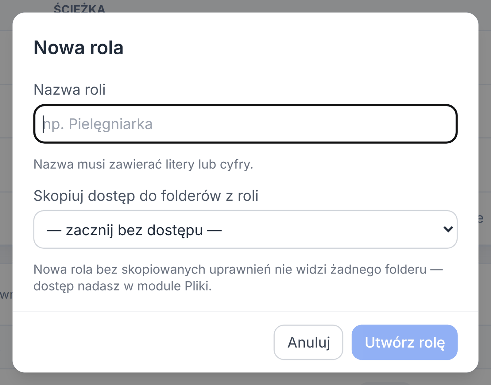
Das Ganze im Blick
Der Bildschirm Zugriffsliste zeigt eine Übersicht aller Rollen und Ordner an einer Stelle, man sieht darauf also sofort, wer was sieht. Ein Klick auf einen Ordner führt unmittelbar zu ihm im Explorer.
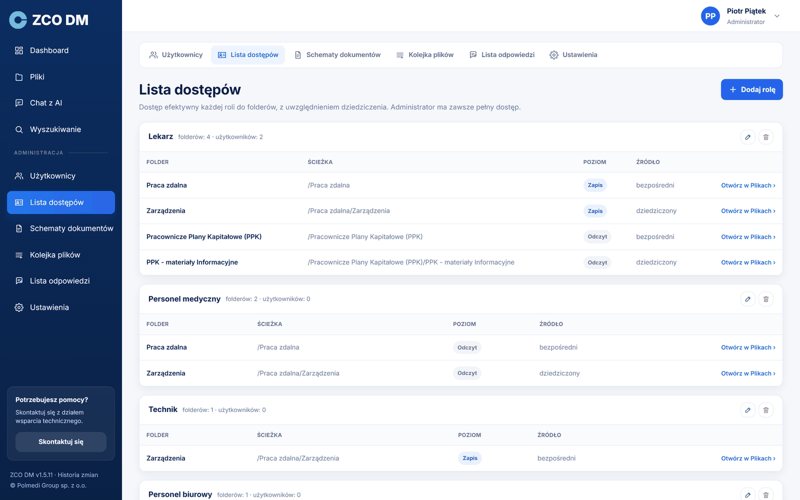
KI-Chat — Fragen nach dem Inhalt der Dokumente
Der Bildschirm KI-Chat ist der Ort, an dem wir Fragen nach dem Inhalt der Dokumente stellen. Er teilt sich in drei Teile: die Liste früherer Unterhaltungen links, das Unterhaltungsfenster in der Mitte und einen Verweis auf die Suche rechts.
Die Frage schreiben wir in das Feld unten und bestätigen sie mit der Taste Enter; Shift+Enter springt in eine neue Zeile. Die Antwort erscheint nach und nach, Wort für Wort — sie lässt sich mit der Schaltfläche Stoppen unterbrechen.
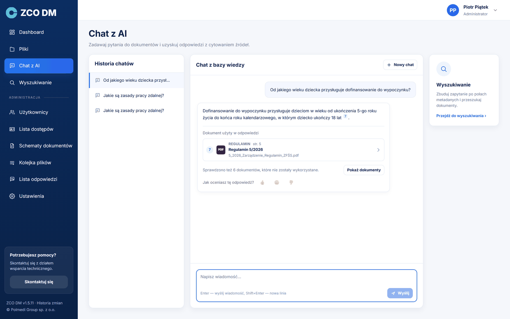
Woher die Antwort stammt
Unter jeder Antwort steht eine Liste der in der Antwort verwendeten Dokumente. Jeder Eintrag nennt die Verweisnummer, den Dateityp, die Kategorie des Dokuments, die Seite und den Dateinamen; ein Klick öffnet das Quelldokument. Die Zahlen in den Plaketten entsprechen den Verweisen im Text der Antwort, man sieht also, welcher Satz woher stammt.
Darunter steht mitunter noch ein Hinweis der Art Es wurden auch 7 Dokumente überprüft, die nicht verwendet wurden, samt einer Schaltfläche, die deren Liste aufklappt. Das sind Dokumente, die die Anwendung auf der Suche nach einer Antwort durchgesehen, in denen sie zum Thema aber nichts gefunden hat — ein Blick lohnt, wenn eine Antwort unvollständig wirkt.
Wenn in den Dokumenten keine Antwort steht
Die Anwendung antwortet ausschließlich auf der Grundlage der hochgeladenen Dokumente. Findet sie keine Angaben, schreibt sie das offen, statt sich etwas auszudenken. Die Antwort „In den Dokumenten wurden dazu keine Informationen gefunden“ ist somit eine Auskunft über die Sammlung der Dokumente und kein Fehler.
Fragen nach einer Liste von Dokumenten
Eine Frage wie „Zeige alle Verordnungen aus dem Jahr 2023“ erkennt die Anwendung als Bitte um eine Auflistung, nicht um eine Antwort aus dem Inhalt. Sie antwortet dann mit dem Satz „Ich habe N Dokumente gefunden“, der Liste dieser Dokumente und der Schaltfläche Diese Liste als XLSX-Datei herunterladen.
Unterhaltungen
Jede Unterhaltung wird in der Liste links gespeichert, und man kann zu ihr zurückkehren. Die Schaltfläche Neuer Chat beginnt eine Unterhaltung von vorn. Das hat Bedeutung: Innerhalb einer Unterhaltung berücksichtigt die Anwendung frühere Fragen, bei einem Themenwechsel ist es also besser, eine neue zu beginnen.
Unter der Antwort erscheint die Bitte um eine Bewertung. Bewertungen gelangen auf den Bildschirm Antwortprotokoll im Verwaltungsbereich und dienen dazu, die Arbeitsqualität zu verbessern — es lohnt sich, die Benutzer zu ihrer Nutzung zu ermuntern.
↑ InhaltSuche über die beschreibenden Felder
Die Suche ist ein eigener Bildschirm im Menü. Sie beantwortet Fragen nach der Struktur der Sammlung: „alle Verordnungen aus dem Jahr 2023“, „von einer bestimmten Person unterzeichnete Anträge“. Der Chat beantwortet Fragen nach dem Inhalt — die beiden Wege sind bewusst nicht vermischt.
Fragen Sie in gewöhnlicher Sprache
Am einfachsten ist es, die Frage in gewöhnlicher Sprache in das Feld oben zu schreiben. Der Cursor steht dort schon beim Betreten des Bildschirms. Die Anwendung erkennt aus der Frage die Art des Dokuments und die Bedingungen, füllt damit das Formular darunter aus und zeigt sofort die Ergebnisse. Den erkannten Filter kann man danach von Hand korrigieren und erneut suchen.
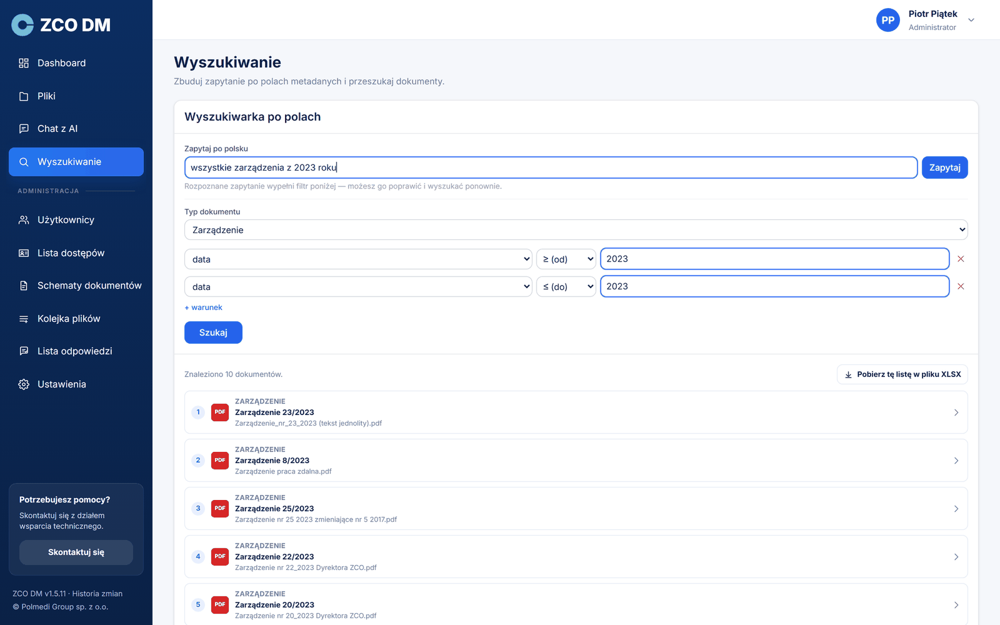
Das Formular
Das Formular besteht aus einer Art des Dokuments und beliebig vielen Bedingungen. Eine Bedingung ist ein beschreibendes Feld, ein Operator (enthält, gleich, von, bis, nach, vor) und ein Wert. Die Liste der verfügbaren Felder hängt von der gewählten Art des Dokuments ab — sie stammt unmittelbar aus den Dokumentschemata.
Ergebnisse
Die Ergebnisse sehen genauso aus wie die Liste der Dokumente unter einer Chat-Antwort: Nummer, Dateityp, Kategorie, Dokumentname und Dateiname. Ein Klick öffnet das Dokument. Über der Liste steht die Schaltfläche Diese Liste als XLSX-Datei herunterladen — die Tabelle enthält den vollständigen Satz beschreibender Felder, mit den Spalten in der im Dokumentschema festgelegten Reihenfolge.
Verwaltung
Der Verwaltungsbereich liegt im Menü unter der Linie VERWALTUNG und ist nur für Administratorkonten sichtbar. Dieselben Einträge wiederholt die Registerleiste am oberen Rand jedes dieser Bildschirme.
Benutzer
Konten anlegen, Rolle ändern, deaktivieren und Passwort zurücksetzen. Ein Konto meldet sich mit der E-Mail-Adresse an; der Anzeigename dient nur der Darstellung in der Oberfläche und darf sich wiederholen.
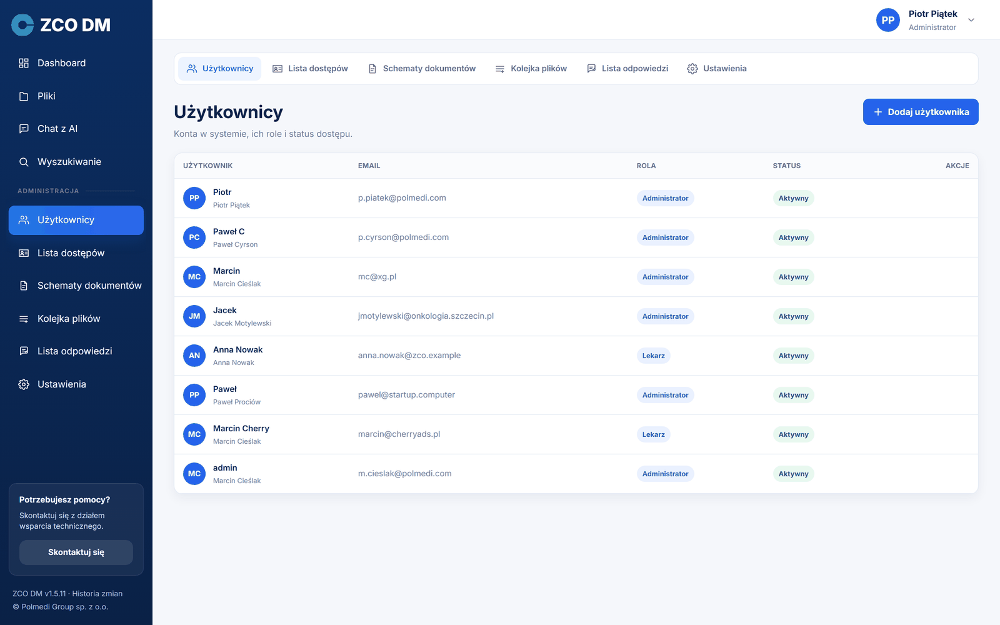
Zugriffsliste
Eine Übersicht der Berechtigungen aller Rollen sowie die Verwaltung der Rollen selbst — beschrieben im Kapitel über Berechtigungen.
Dokumentschemata
Arten von Dokumenten samt beschreibenden Feldern, Erkennungskriterien und Dateinamenmuster. Das ist der Bildschirm, der die Arbeitsqualität der Suche am stärksten beeinflusst — beschrieben im Kapitel über die Dokumentenerkennung.
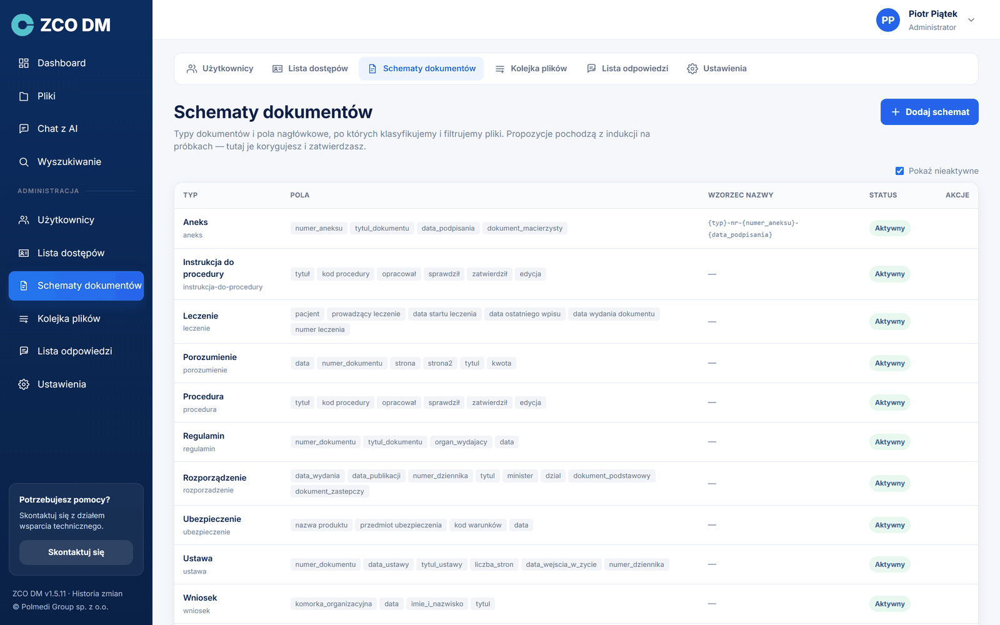
Dateiwarteschlange
Ein Blick auf die Verarbeitung: was wartet, was gerade läuft, was fehlgeschlagen ist. Hier sind die erkannte Art des Dokuments und die gezogenen Felder zu sehen, es ist also die erste Stelle, in die man schauen sollte, wenn ein Dokument in den Ergebnissen nicht auftaucht.
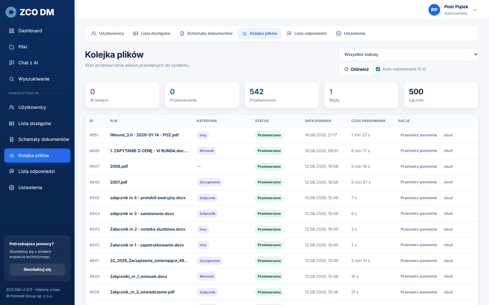
Antwortprotokoll
Die für Chat-Antworten vergebenen Bewertungen samt Frage, Antwort und den genannten Dokumenten. Es dient dazu, Fragen aufzuspüren, die die Anwendung schlecht beantwortet — jeder solche Eintrag ist ein Hinweis darauf, welches Dokument fehlt oder welches Schema einer Korrektur bedarf.
Einstellungen
Der Bildschirm teilt sich in drei Bereiche.
- Anwendungsidentifikation — Name der Instanz, Farbe der Beschriftung und Symbol. Das Symbol muss eine quadratische PNG- oder SVG-Datei sein (empfohlenes Minimum 128×128 px); es erscheint oben im Menü und auf dem Anmeldebildschirm. Die Vorschau daneben zeigt genau das, was der Benutzer sehen wird.
- Integrationen und Sitzung — die Webhook-Adressen für Verarbeitung und Chat, die Liste der erlaubten Dateiendungen sowie die Zeit bis zur automatischen Abmeldung.
- Ausgehende E-Mail — die Daten des SMTP-Servers und die Support-Adresse. Ohne sie antwortet das Formular „Kontakt aufnehmen“ offen, dass der Versand nicht eingerichtet ist.
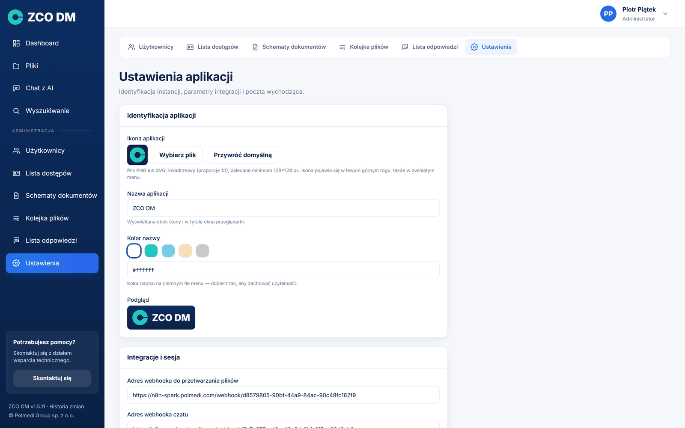
Änderungshistorie
Die Versionsnummer unten im Seitenmenü führt zur Liste der Änderungen in den aufeinanderfolgenden Ausgaben der Anwendung. Diese Seite steht allen Angemeldeten offen.
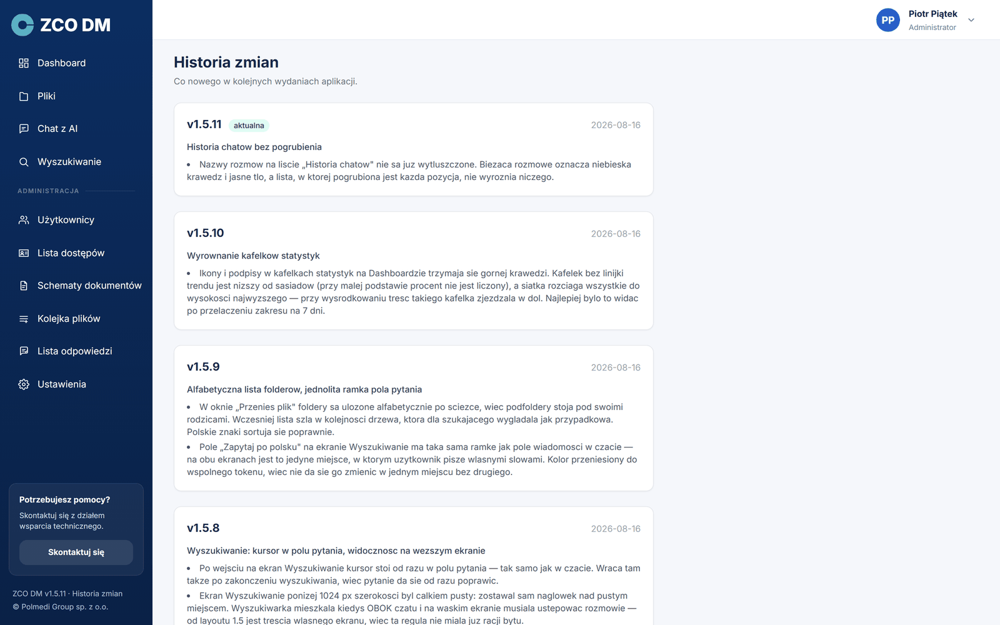
Wie die Anwendung Dokumente erkennt
Nach dem Hochladen eines Dokuments versucht die Anwendung festzustellen, was es ist, und beschreibende Felder daraus zu ziehen. Sie tut das auf der Grundlage der Dokumentschemata — Definitionen von Dokumentarten, die der Administrator auf einem eigenen Bildschirm festlegt.
Woraus ein Schema besteht
- Name und Bezeichner der Dokumentart, zum Beispiel „Verordnung“.
- Klassifizierungskriterien — Hinweise in gewöhnlicher Sprache, woran diese Dokumentart zu erkennen ist.
- Kopffelder — was aus dem Inhalt zu ziehen ist: Nummer, Datum, Titel, unterzeichnende Person. Die Reihenfolge der Felder bestimmt die Reihenfolge der Spalten beim Export in eine Tabelle.
- Dateinamenmuster — optional, unten beschrieben.
Feldtypen
Jedes Feld hat einen Typ: Text, Datum, Zahl, Betrag oder Werteliste. Der Typ ist keine Zierde — er entscheidet darüber, was sich mit dem Feld anstellen lässt. Datumsangaben erlauben das Filtern nach Zeiträumen, und Beträge gelangen als Zahlen mit Nachkommastellen in die Tabelle, sodass sich die Spalte summieren lässt (auch dann, wenn im Dokument „1 234,56 zł“ steht).
Dateinamen aus erkannten Feldern
Jede Dokumentart kann ein Dateinamenmuster haben, zum Beispiel {typ}-nr-{dokumentnummer}-{datum}. Die Anwendung schlägt dann Namen vor, die dem Inhalt des Dokuments entsprechen, statt „scan_0001.pdf“. Ein leeres Muster bedeutet, dass wir für diese Kategorie keine Namen vorschlagen.
Namen werden stapelweise vergeben: Auf dem Bildschirm Dateien wählen wir die Dokumente aus und wählen Aktion auf ausgewählte anwenden → Namen entsprechend Kategorie zuweisen. Das Fenster zeigt zunächst eine Übersicht alter Name → neuer; jeder Eintrag lässt sich von Hand korrigieren oder abwählen. Ohne diese Vorschau geschieht nichts.
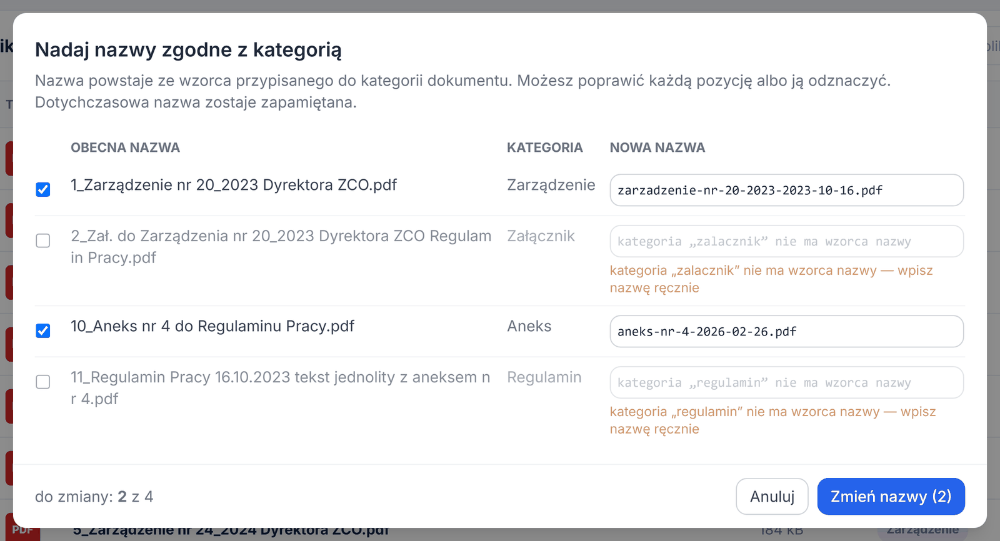
Der bisherige Name wird gemerkt und ist in den Einzelheiten zum Dokument sichtbar, die Änderung lässt sich also nachvollziehen, und das Dokument bleibt für denjenigen erkennbar, der es unter dem alten Namen im Gedächtnis hat.
Wenn die Erkennung scheitert
Ein Dokument, das die Anwendung keiner Art zugeordnet hat, trägt die Kategorie nicht erkannt. Über den Chat bleibt es durchsuchbar — in der nach Feldern filternden Suche findet es sich hingegen nicht. Die häufigsten Ursachen sind ein Scan schlechter Qualität oder das Fehlen eines Schemas, das diese Dokumentart beschreibt.
Anfrage an den technischen Support
Die Kachel Brauchen Sie Hilfe? unten im Seitenmenü führt zum Formular für eine Anfrage an den technischen Support. Es genügt, die Sache zu beschreiben und abzuschicken — Absender und Instanz werden automatisch beigefügt, und die Antwort geht an die dem Konto zugeordnete E-Mail-Adresse.
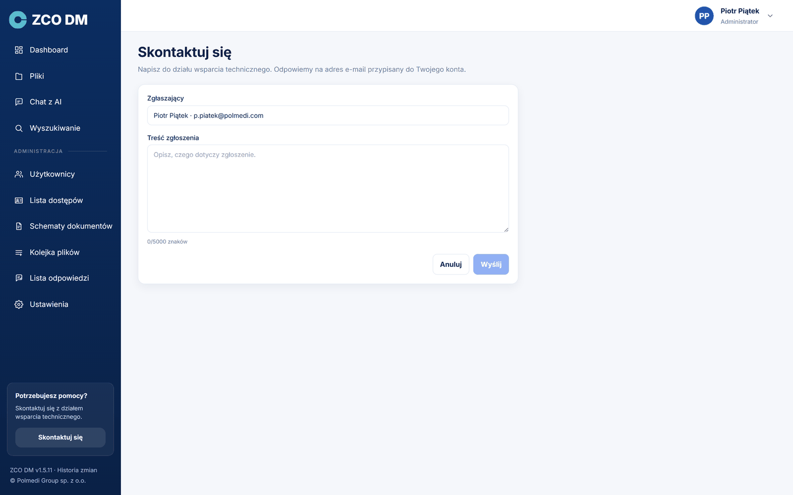
Die Anfrage geht per E-Mail, nicht über den Mechanismus der Dokumentenverarbeitung. Das ist Absicht: Ein Ausfall der Verarbeitung darf den Weg zum Melden eines Problems nicht abschneiden, denn genau dann werden Meldungen am dringendsten gebraucht.
Bewährte Vorgehensweisen
- Dokumenten Namen geben, die sagen, was sie sind — das erleichtert das Erkennen der Art und das spätere Suchen.
- Dokumente in einen thematischen Ordner hochladen, nicht in den Stammordner.
- Nach dem Hochladen den Status prüfen: Erst Verarbeitet bedeutet, dass das Dokument Fragen beantwortet.
- Bei einem Themenwechsel einen neuen Chat beginnen, damit frühere Fragen die Antwort nicht beeinflussen.
- Bei formalen Angelegenheiten das unter der Antwort genannte Quelldokument öffnen.
- Berechtigungen den Rollen auf einem möglichst hohen Ordner erteilen — Unterordner erben sie automatisch.
- Nach einem größeren Stapel Dokumente die Dateiwarteschlange durchsehen und falsch erkannte Arten korrigieren.
- Konten ausgeschiedener Personen deaktivieren statt löschen — das erhält die Historie der Vorgänge.
Einschränkungen und Entwicklungspläne
Die Anwendung wird in Etappen entwickelt. Die folgenden Einschränkungen sind bekannt und zur Beseitigung eingeplant — man sollte sie kennen, um sie nicht für Fehler zu halten.
- Die Anwendung antwortet ausschließlich auf der Grundlage der in die Datenbank hochgeladenen Dokumente — sie kennt weder Vorschriften noch Wissen von außerhalb.
- Eine Chat-Antwort ist eine Zusammenfassung von Abschnitten der Dokumente. Bei formalen Angelegenheiten gilt das unter der Antwort genannte Quelldokument.
- Das Erkennen der Dokumentart und der beschreibenden Felder funktioniert gut bei Dokumenten üblichen Aufbaus; untypische Dokumente können eine Korrektur der Art von Hand erfordern.
- Die Dokumentvorschau öffnet die PDF-Datei in einem neuen Browser-Tab. Ein in die Anwendung eingebauter Betrachter — der das Dokument gleich auf der angegebenen Seite öffnet — ist geplant.
- Verbindungen zwischen Dokumenten (etwa eine Verordnung und ihre Anlagen) werden in der Oberfläche noch nicht dargestellt.
- Die Suche über die beschreibenden Felder durchsucht den Inhalt der Dokumente nicht — dafür ist der Chat da.
Jede Änderung ist in der Änderungshistorie beschrieben, die aus der Anwendung heraus unter der Versionsnummer unten im Menü erreichbar ist.
↑ InhaltHäufige Fragen
Nachfolgend die Situationen, die beim ersten Kontakt mit der Anwendung am häufigsten gemeldet werden.
| Situation | Was zu tun ist |
|---|---|
| Ich habe ein Dokument hochgeladen, aber der Chat kennt es nicht. | Den Status in der Dateiliste prüfen. Solange er nicht Verarbeitet lautet, nimmt das Dokument an der Suche nicht teil. Bei langen Dokumenten dauert die Verarbeitung einige Minuten. |
| Der Chat antwortet, er habe keine Informationen gefunden. | Meist betrifft die Frage ein Dokument, das nicht in der Datenbank ist, oder das Dokument ist noch nicht verarbeitet. Es lohnt sich auch, die Frage anders zu stellen — in einem vollständigen Satz. |
| Ich sehe einen Ordner nicht, von dem ein Kollege spricht. | Ordner werden Rollen freigegeben. Fehlt der Zugriff, sollte man den Administrator um die Berechtigung für diesen Ordner bitten. |
| Die Anwendung hat mich von selbst abgemeldet. | Nach einer vom Administrator festgelegten Zeit ohne Aktivität läuft die Sitzung ab. Es genügt, sich erneut anzumelden. |
| Ich kann keine Datei hochladen — das Auswahlfenster zeigt sie nicht. | Die Anwendung nimmt die Formate PDF, DOCX, ODT und XLSX an. Dateien in anderen Formaten müssen zuerst in einem davon gespeichert werden. |
| Ich kann mich nicht mit dem Benutzernamen anmelden. | Zur Anmeldung dient ausschließlich die dem Konto zugeordnete E-Mail-Adresse. Der Benutzername ist lediglich ein Anzeigename. |
| Ich habe mein Passwort vergessen. | Ein neues Passwort setzt der Administrator im Modul Benutzer. Nach der Anmeldung lohnt es sich, es auf der Seite Profil in ein eigenes zu ändern. |
| Wo finde ich dieses Handbuch in der Anwendung? | Unter dem Kreis mit den Initialen in der rechten oberen Ecke, der Eintrag Hilfe. Von dort lässt es sich auch als PDF herunterladen. |
| Ein Dokument wurde als falsche Art erkannt. | In der Dateiwarteschlange lässt sich die richtige Art von Hand angeben; die Anwendung zieht die Felder sofort neu. |
| Ein neuer Mitarbeiter sieht überhaupt keine Dokumente. | Das Konto hat eine Rolle, aber die Rolle hat noch keine Berechtigungen für Ordner. Berechtigungen werden in der Ansicht Dateien mit dem Schlüsselsymbol am Ordner erteilt. |
| Ich möchte eine neue Dokumentart mit eigenen Feldern anlegen. | Dafür ist die Seite Dokumentschemata in der Verwaltung da. |
Glossar
| Begriff | Bedeutung |
|---|---|
| KI-Chat | Der Bildschirm, auf dem wir Fragen nach dem Inhalt der Dokumente stellen. |
| Suche | Der Bildschirm, auf dem wir Dokumente nach beschreibenden Feldern filtern. |
| Chat | Eine in gewöhnlicher Sprache geführte Unterhaltung mit der Anwendung. |
| Abschnitt (Chunk) | Ein Stück eines Dokuments — die Einheit, in die die Anwendung den Inhalt teilt, um die Quelle einer Antwort genau angeben zu können. |
| Parsen | Das Lesen des Inhalts eines Dokuments und seine Aufbereitung für die Suche. |
| Beschreibendes Feld | Eine Angabe, die ein Dokument beschreibt — Nummer, Datum, genehmigende Person. |
| Dokumentart | Eine automatisch erkannte Kategorie: Verordnung, Verfahren, Antrag und andere. |
| Rolle | Eine einem Konto zugewiesene Gruppe von Berechtigungen — Ordner werden Rollen freigegeben, nicht Personen. |
| Quelle | Das Dokument und die Seite, aus denen ein gegebener Abschnitt der Antwort stammt. |